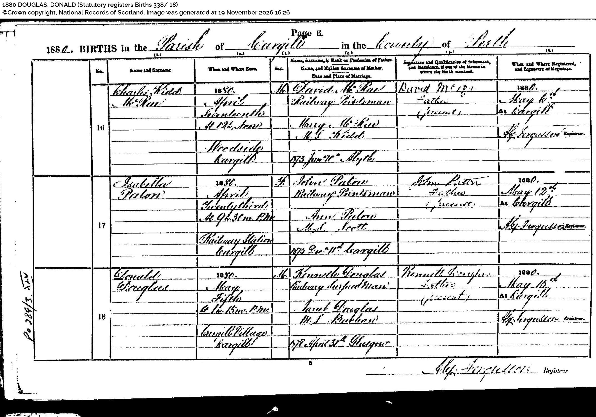

Birth of Donald Douglas, Cargill, 1880
Statutory register of births, Parish of Cargill, County of Perth, 1880, page 6, entry 18 (338/18). National Records of Scotland.

The entry is boxed in red and the names are highlighted. See the full page.

What it says
- Name: Donald Douglas, male.
- Born: May 5, 1880, 4:15 p.m., Cargill Village, Cargill.
- Father: Kenneth Douglas, railway surfaceman.
- Mother: Janet Douglas, maiden surname Buchan. Parents married April 1870, Glasgow.
- Informant: Kenneth Douglas, father.
Why it matters
In 1901 a young joiner named Donald Douglas was boarding at Shieldhill, a few houses from Gean Tree. This entry shows his family were Kenneth and Janet Douglas of Cargill, not the family of Robert Douglas, who raised Laurence. No link between the two Douglas families has been found.
Crown copyright, National Records of Scotland. Image from ScotlandsPeople.